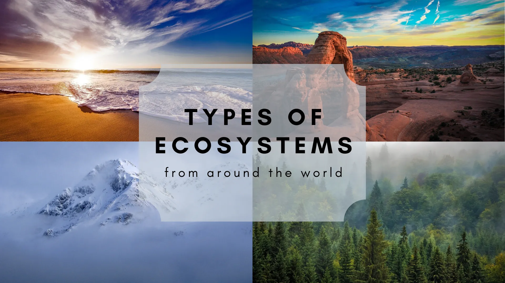
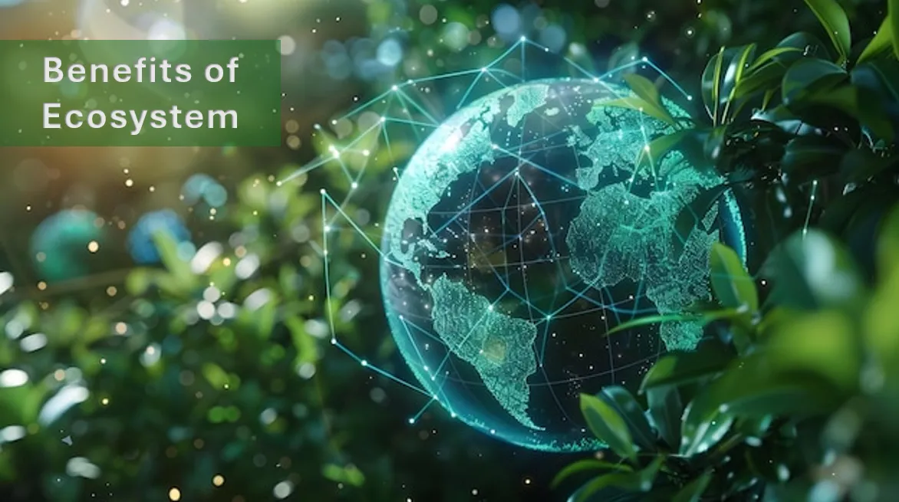
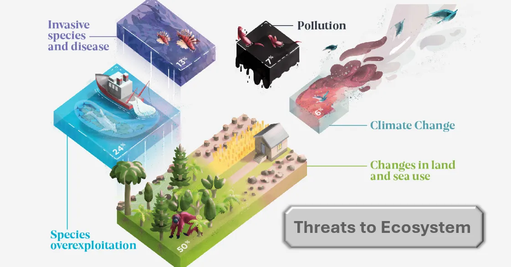
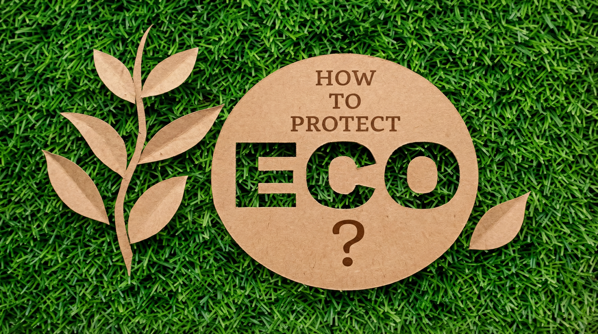
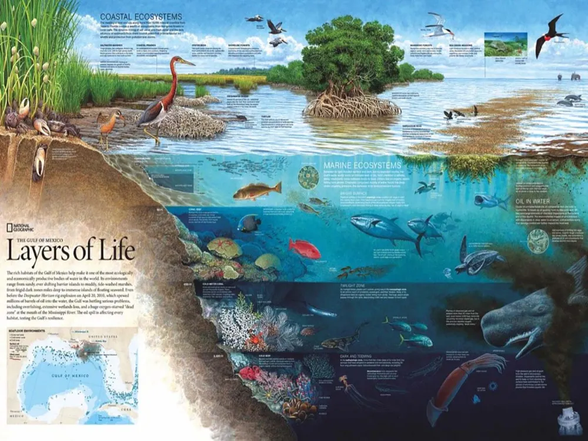

Introduction
Ecosystems are essential to human life and the health of the planet. They provide us with a variety of benefits, including clean air and water, food, medicine, and recreation. However, many ecosystems are under threat from human activities such as deforestation, pollution, and climate change.

Types of Ecosystems
- Forests
- Grasslands
- Wetlands
- Oceans and coasts
- Mountains

Benefits of Ecosystem
- Clean air and water
- Food production
- Medicine and natural remedies
- Climate regulation
- Biodiversity and habitat
- Recreation and tourism

Threats to Ecosystems
- Deforestation
- Pollution
- Climate change
- Overfishing
- Urbanization

Protecting Ecosystems
- Conservation efforts
- Sustainable practices
- Pollution reduction
- Climate action
- Education and awareness
Get Involved
Everyone can play a role in protecting ecosystems. Here are some ways you can get involved:
- Reduce, reuse, and recycle to minimize waste.
- Support conservation organizations and initiatives.
- Participate in local clean-up events.
- Advocate for policies that protect the environment.
- Educate others about the importance of ecosystems.
More
Ecosystems are deeply interconnected systems where plants, animals, microorganisms, and humans depend on one another for survival. Understanding how ecosystems function helps us recognize the impact of our actions on nature and encourages responsible decision-making. From land-based ecosystems like forests, mountains, and alpine regions to water-based ecosystems such as freshwater, marine, estuarine, and aquaculture systems, each plays a unique role in maintaining ecological balance.
Exploring ecosystems in greater detail allows us to learn about biodiversity, natural cycles, climate regulation, and sustainable resource use. By gaining this knowledge, we can better protect ecosystems, reduce environmental damage, and contribute to a healthier planet for future generations.
Know More